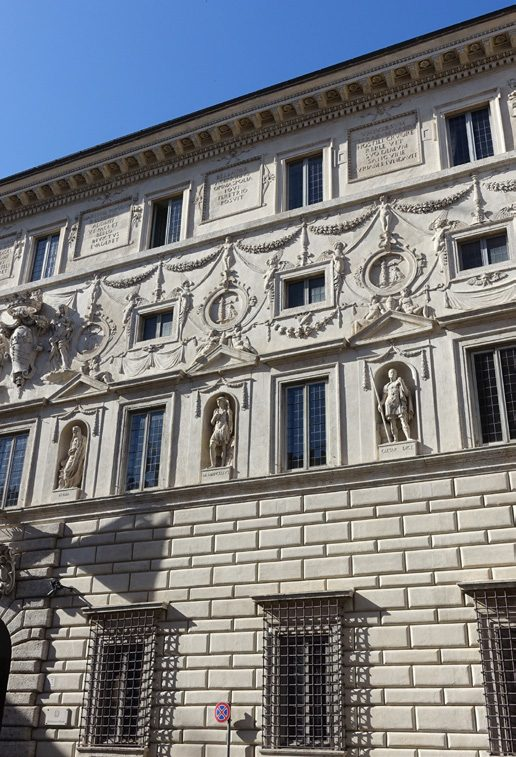
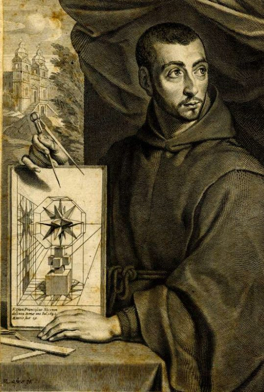
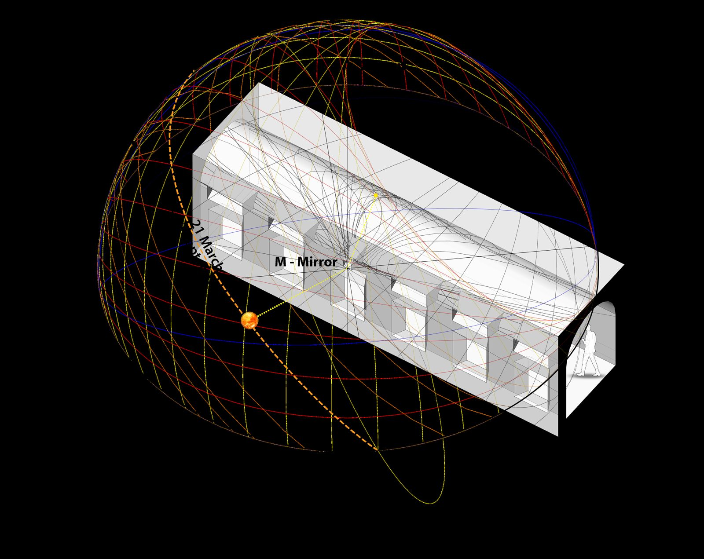
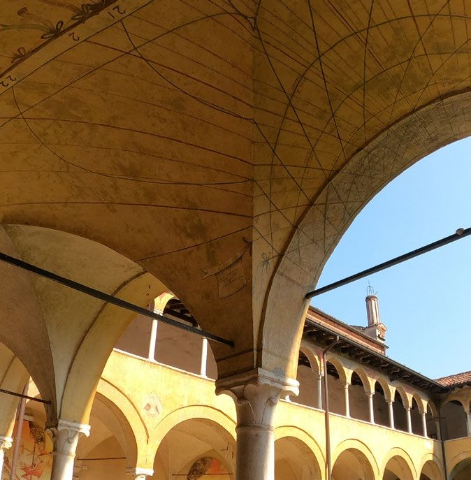
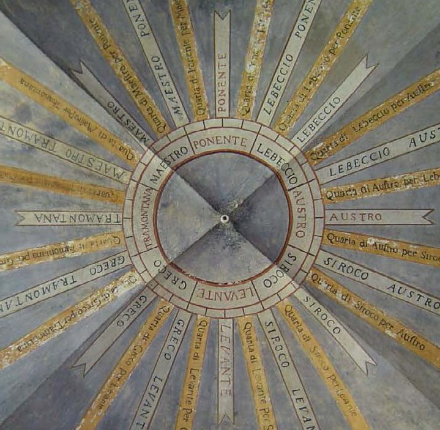
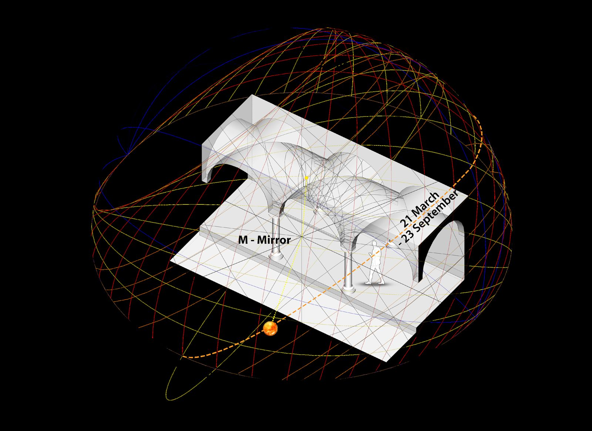

Palazzo SpadaMaignan, 1644 · latitude 41.9028° N · quartic curves on a barrel vault.
San Cristo, BresciaAuthor unknown · latitude 45.5416° N · restored 2002.
The pointIf the catoptric-sphere method reconstructs these two, it can be turned on Grenoble.
Chapter I · 5
Two Reflected Dials in Rome & Brescia
Testing Maignan's method on a barrel vault and a dome before turning it on the staircase at Grenoble.
Before Grenoble, the thesis tests Maignan's catoptric-sphere method on two dials it can model: Maignan's own masterpiece at the Palazzo Spada, and an anonymous dial at Brescia. Both are drawn on compound curved surfaces, so building a dial there becomes a pure problem of projecting a celestial sphere onto an awkward vault.
iPalazzo Spada, Rome — Maignan, 1644


Made near Capo di Ferro for Cardinal Bernardino Spada — the patron who had Borromini remodel the palace — this is one of the most complicated dials ever built. A mirror on a wall facing roughly south-east lights a gallery whose barrel vault meets the wall along a continuous curve; the dial lines run along that curve. Geometrically it is the intersection of two quadric surfaces: the reflected cone from the mirror and the Sun's positions, and the cylinder of the vault. Their meeting is a network of quartic curves — curves that cannot be drawn on a plane. The thesis rebuilds an ideal celestial sphere for Rome's latitude (41.9028° N), places its centre at the mirror on the sill, and intersects each solar cone with the vault one by one.

iiSan Cristo, Brescia


The church, sometimes called “the Sistine Chapel of Brescia”, keeps a reflected dial of unknown authorship — possibly Fra Domenico, a pupil of Vincenzo Coronelli — reopened after restoration in 2002, when the historic mirror was replaced with reflective glass and stainless steel 25 cm below the ceiling. The decorated ceiling carries the hours of the day, the months, the zodiac and Latin inscriptions to Sun and Moon: Italic hours in grey to 24, French hours added in red 1–12, month lines crossing them, June at the top (summer solstice) and December at the bottom. It also gives the time in the Canaries, Jerusalem, Mecca, Lisbon and the East Indies. The dome reads as an image of the Dome of Heaven; the faint reflected light carries the idea that love proceeds from God. The thesis rebuilds the ideal sphere for Brescia's latitude (45.5416° N) and repeats the same reflection-and-intersection with the model of the dome.

Both reconstructions stay at a schematic level, but both confirm the same thing: Maignan's catoptric-sphere method — unorthodox and highly personal as it is — works as an analytical tool. That licence carries directly into Chapter II and the staircase at Grenoble. As the thesis asks: four such dials on this list, all indoors, none visible from the street — how many more wait in Europe's thousands of towns?